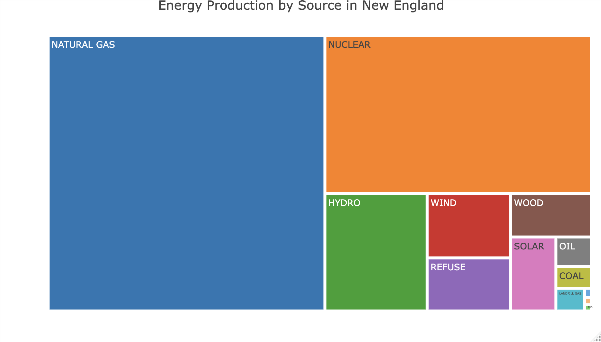
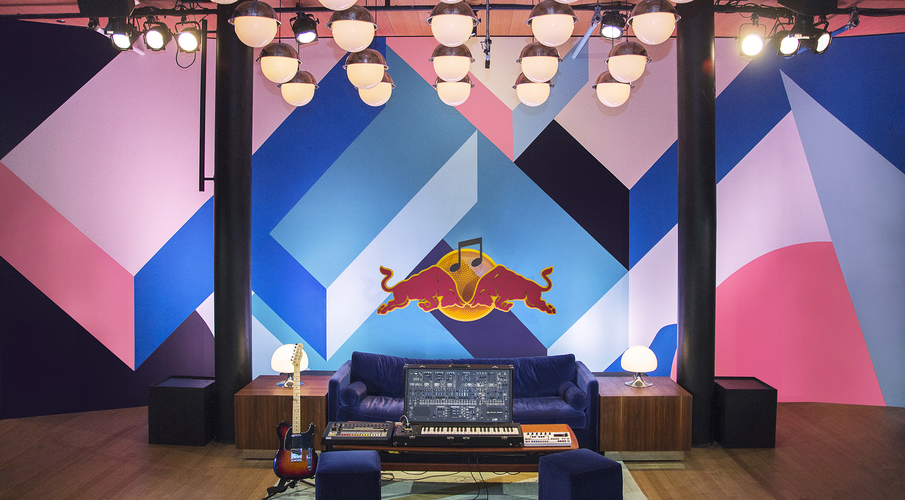

UR Complex consists of the four following buildings: Meserve Hall, Lake Hall, Holmes Hall, & Nightingale Hall
The Academy testings was initiated in 1998 in Berlin[5] and has taken place annually in subsequent years in Toronto, London, São Paulo, Seattle, Cape Town, Rome, Melbourne, New York, Madrid, Barcelona, Tokyo, Paris, Montréal and Dublin. While the first few editions saw a greater emphasis on DJ culture, the program and recording facilities now accommodate all genres and aspects of the musical spectrum.[6]
Prospective applicants to the Academy must prepare a demo CD of their work, be it original productions, songs or a DJ set, along with a completed questionnaire, and mail it to a Red Bull Music Academy office in Cologne, Germany. From there, each application is taken into consideration, with no quota on country or musical genre. From these applications, 60 are selected and broken down into two groups of 30.[7] Each group of 30 is flown in to the location of the respective year's event for one of two fortnightly “terms” In 2012, the Academy received over 4000 applications to take part in the 2013 New York City edition.[8]
For two weeks, the participants have the to opportunity work in up to twelve studios specially designed[9] for every edition of the Red Bull Music Academy. There, they have access to a range of the latest gear as well as analog equipment for music production and performance.[10] There are no deadlines or set quotas, and Red Bull does not own the music produced in the building.[11] These collaborative sessions are in part facilitated by the Academy’s “Studio Team,” all experienced music producers in various fields. Twice daily, participants attend lectures by guest speakers who range from composers, producers,[12] sound engineers and technological pioneers, to rappers[13] and industry professionals. Lecture attendance is the only compulsory part of the program.
The Red Bull Music Academy does not seek to select or create “stars,” [15] instead bringing together music makers with a wide range of talents, skill levels and cultural backgrounds. Notable former participants include Aloe Blacc, Branko of Buraka Som Sistema, Bahrainian oud player Hasan Hujairi, Juan Son, Natalia Lafourcade, Nina Kraviz, David Eriksson of Teenage Engineering, Blackcoffee, Flying Lotus, Salva and Andreya Triana.
The Academy also publishes a yearly double-CD compilation of music produced at the respective last edition entitled Various Assets — Not For Sale. Since 2004, those compilations have featured original music from more than 300 artists, including Dorian Concept, Flying Lotus, Lusine, Theo Parrish, Aloe Blacc, Mark Pritchard, XXXchange, Om’Mas Keith of Sa-Ra, Illuminated faces, Tony Allen, Mr Hudson, Dennis Coffey, Hudson Mohawke, DJ Zinc, Wally Badarou, Benga, Phonte, Jake One, Steve Spacek of Spacek, and Natalia Lafourcade.
The Red Bull Music Academy hosts additional workshops and three-day Base Camp sessions in more than 60 countries every year. These events resemble the actual Academy in consisting of music lectures, hands-on production workshops, studio sessions, art exhibitions, and night time activities such as concerts and club events.[16] There is a strong focus on local topics as well as an international perspective.
Interested in how both age and the use of a building affect its energy performance, we looked at 16 buildings across Northeastern campus with varying use as defined by Northeastern’s Institutional Master Plan. A few patterns arose...
Age clearly was a factor when it came to energy efficiency with newer buildings quite consistently performing better than their older counterparts. For example, Richardson–built in 1938 and has not undergone a major renovation since– uses more than double the electricity per square foot of Ryder which was built more than 20 years before, but underwent a major renovation in 1938.
Similarly, building use is an important factor to consider when it comes to electricity efficiency. Buildings whose main use was Research used more than double the electricity per square foot than administrative buildings who as a whole, demanded the least amount of electricity.
With buildings accounting for approximately 70% of Boston’s greenhouse gas emissions, Boston’s Building Emissions Reduction and Disclosure Ordinance (BERDO) set emissions standards for buildings larger than 20,000 square feet. The ultimate goal is to achieve net zero emissions by 2050. However, there are building requirements established by BERDO for 2030 to help buildings stay on track.
Using data from Northeastern’s Sustainability Office, we calculated the emissions of both Electricity use as well as Natural Gas for 13 buildings on campus in the years 2018 and 2022. These emissions were then calculated in terms of square footage in order to compare them to the BERDO requirements established by the city.
This data shows both good news and bad news. Out of the 13 buildings studied, three have already met the 2030 requirements in 2022. However, there is still much work to be done. Large research facilities like Egan, Mugar, and Hurtig have a considerable gap to bridge before 2030. Still, newer research facilities such as Behrakis show that there is a promising blueprint to achieve these emissions goals. Richardson–built in 1938–remains a problematic building in terms of its emissions.